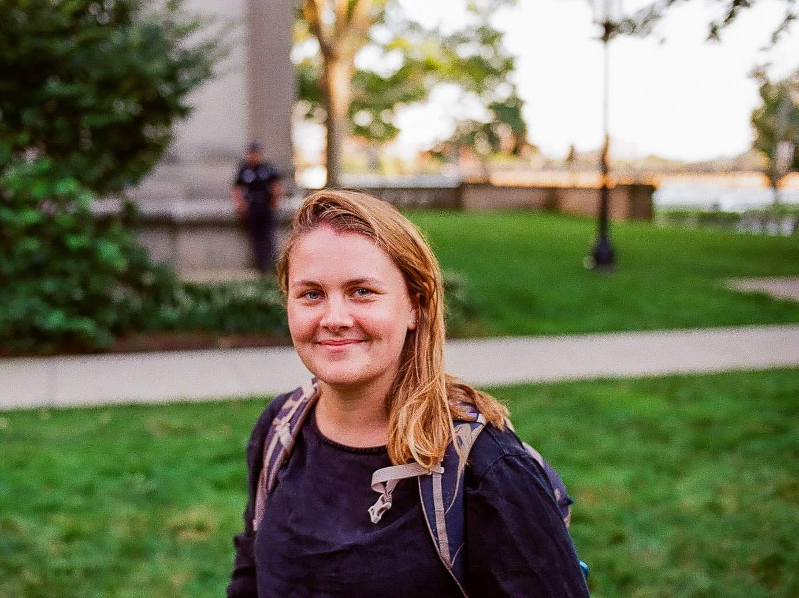
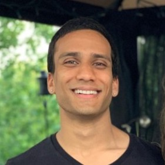
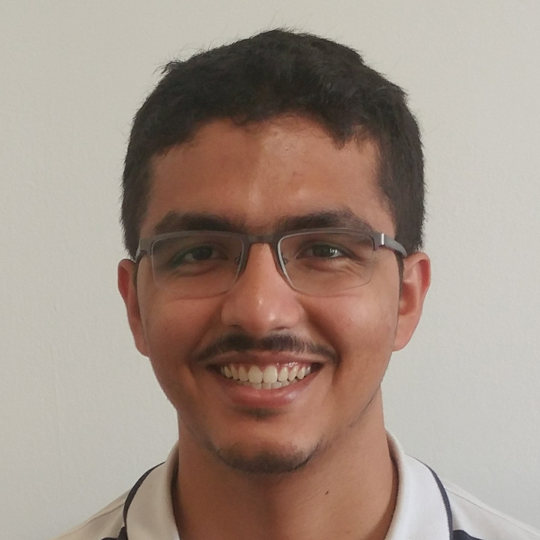
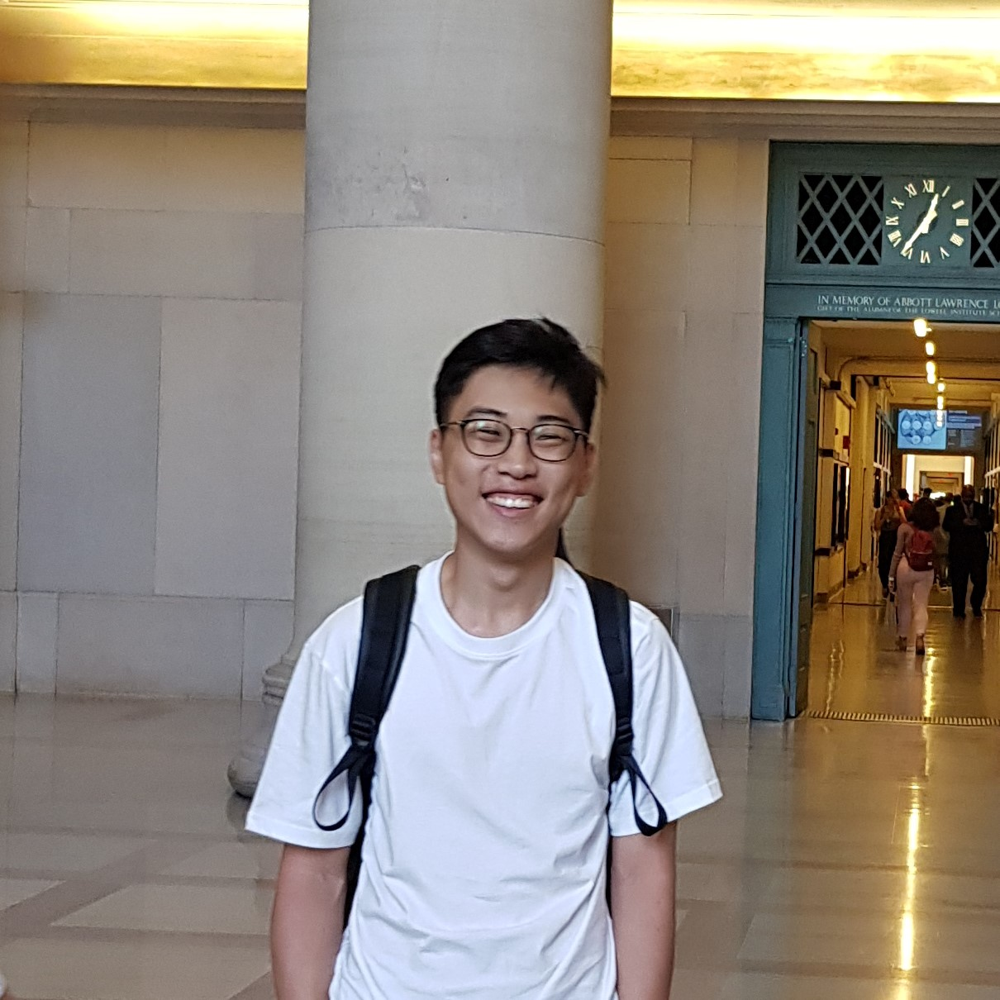
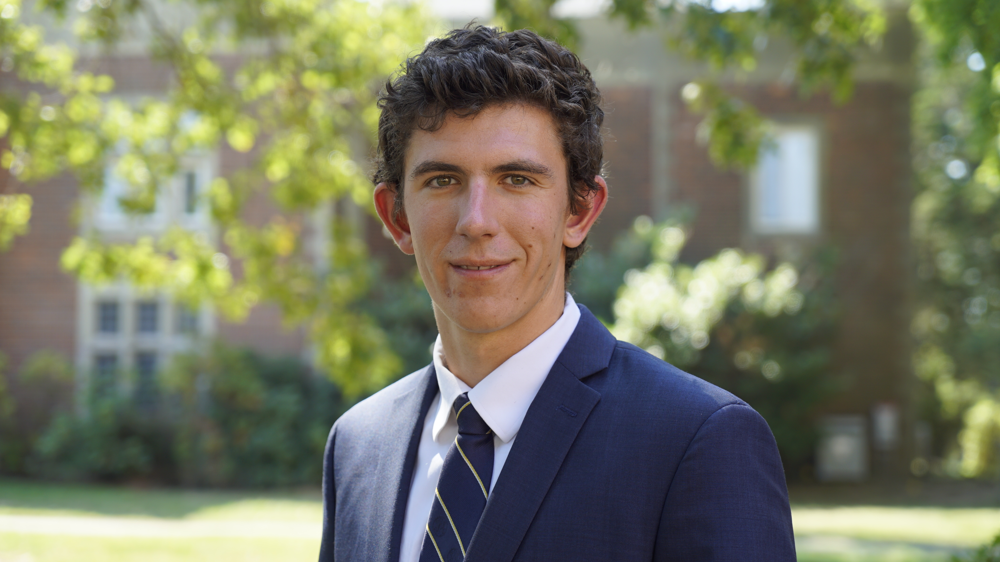
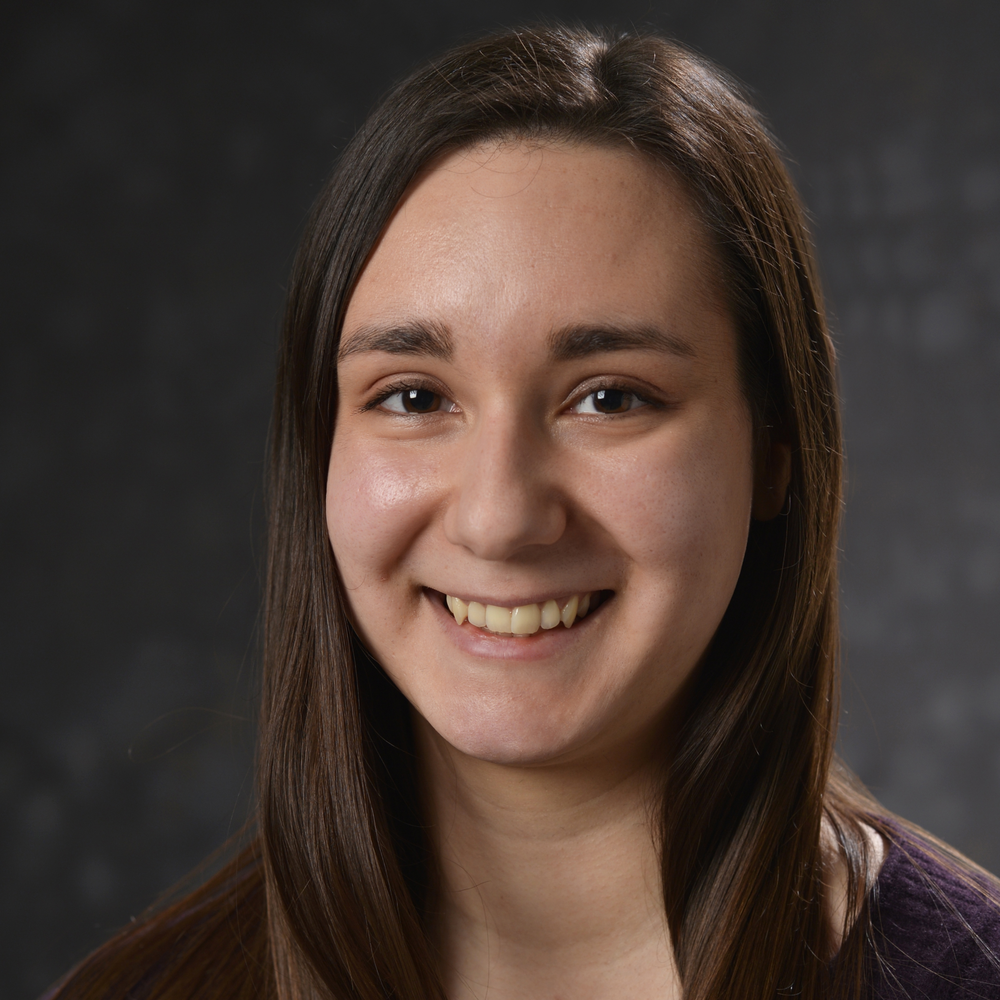
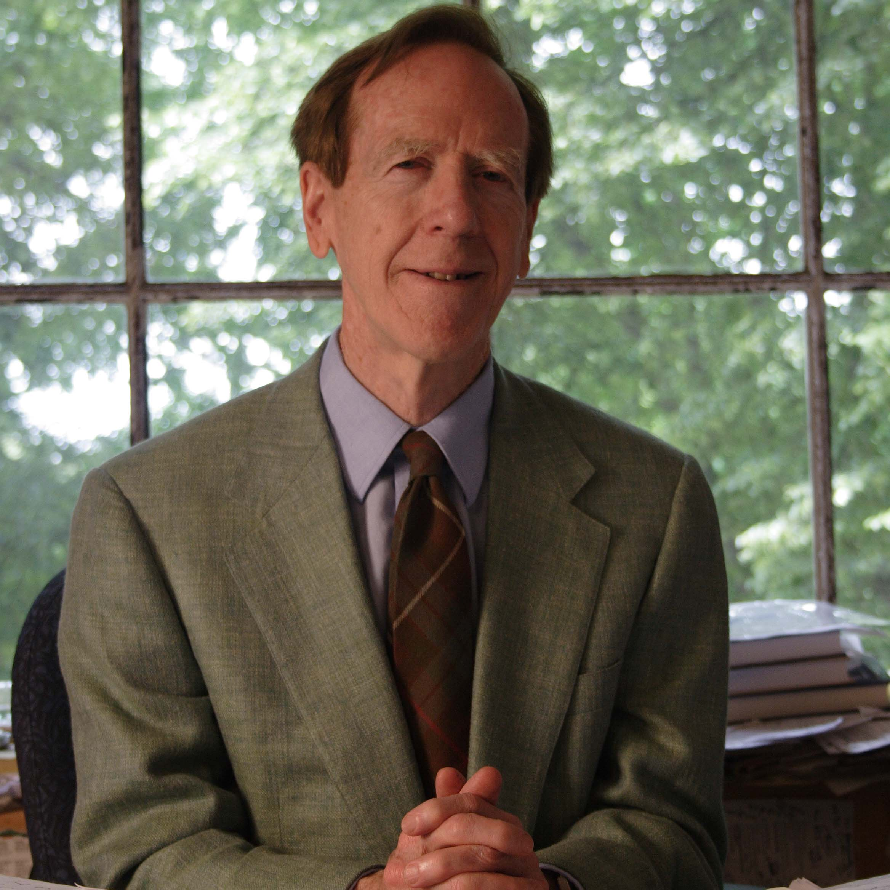

Massachusetts Institute of Technology
Cambridge, MA
Cross-pollinating ideas in applied mathematics
The MIT chapter of the Society for Applied and Industrial Mathematics (SIAM) welcomes undergraduate and graduate students interested in applied mathematics and computational science.
Sign up to give a seminar/talk, or join our mailing list for seminars, workshops, and more!
Recent + Upcoming
SIAM Seminar & Coffee Hour
SIAM Seminar
November 2, 2022
SIAM Seminar & Coffee Hour
Polymer graphs inspired by state machines and tools for polymer informatics
Nathan Rebello
The popular SMILES grammar, or Simplified Molecular-Input Line-Entry System, encodes the exact structural connectivity of a small molecule graph as a single compact linear string. The SMARTS grammar, or SMILES Arbitrary Target Specification, enables users to query these graphs for patterns or substructures. Pattern search in small molecule graphs has been crucial to advancing many scientific, engineering, and commercial applications, including database representation and virtual screening, drug design, structure-to-property relationships, reaction prediction, property prediction, and machine learning applications. Polymers are large stochastic molecules consisting of many repeating units and are found in everywhere from the nylon in our clothing to the PVC in our shoes. Because polymers are stochastic, deterministic small molecule graphs cannot be used to describe them. At MIT, the BigSMILES line notation was created to extend SMILES to encode polymers as ensembles of molecules with a single linear string. In this talk, I will discuss efforts in my PhD to develop graphs for polymers inspired by finite state machines, a new grammar for querying macromolecules, and a depth-first search algorithm. In these graph representations, the cycles in the graph are the repeat units and the non-cyclic elements are the endgroups. This search language allows the user to search functional groups, localize searches to the repeat units, search repeat unit cycles, including logical searches of repeat units, and query the location of the cycles in the graphs, classifying the topology of the polymer. Using these algorithms, chemists can understand how microstructure and topology influence a material’s properties, and design and manipulate stochastic structures with desirable patterns with feasible synthesis routes. With this work, big data and machine learning in polymer informatics and materials science will advance in the same way SMARTS has for small molecules.
March 30, 2022
SIAM Seminar
Capturing missing physics in climate models using neural differential equations
Symmetric Binary Perceptron Model: Algorithms and Barriers
Ali Ramadhan
Even with today's immense computational resources, climate models cannot resolve every cloud in the atmosphere or eddying swirl in the ocean. However, collectively these small-scale turbulent processes play a key role in setting the Earth's climate so we need to represent them well to make accurate climate predictions. Climate models attempt to represent unresolved scales via surrogate models known as parameterizations. Unfortunately, these parameterizations have limited fidelity and can exhibit structural deficiencies. I'll demonstrate how neural differential equations (NDEs) can be constructed to obey known physics (using DifferentialEquations.jl and Flux.jl) and trained on high resolution fluid-dynamical simulations of the ocean (generated using Oceananigans.jl) to remain stable and more accurately represent the effects of turbulent processes than existing parameterizations. I'll also discuss the range of possibilities we are now exploring for data-driven climate model parameterizations with NDEs in the Julia ecosystem.
Eren Can Kizildag
It has been shown very recently that the symmetric binary perceptron (SBP) exhibits an extreme form of clustering at all positive densities: almost all of its solutions are singletons separated by large distances. This suggests that finding a solution is likely to be computationally intractable. At the same time, SBP admits polynomial-time algorithms succeeding at low enough densities. This conundrum challenges the view that clustering implies algorithmic hardness. In this paper, we conduct a different landscape analysis to understand the true algorithmic tractability of this problem. Guided by statistical physics insights, we show that SBP exhibits the multi Overlap Gap Property (m-OGP), an intricate geometric property known to be a rigorous barrier for large classes of algorithms. Our analysis shows the m-OGP threshold (a) is well below the satisfiability threshold; and (b) is nearly tight: up to poly-logarithmic factors, it matches the best algorithmic threshold. We then leverage the m-OGP to establish that any sufficiently stable algorithm (appropriately defined) fails to find a satisfying solution. Furthermore, we establish that any online algorithm (appropriately defined) fails to find a solution for densities close enough to the satisfiability threshold. Our hardness result for the stable algorithms is based on Ramsey Theory from extremal combinatorics, and is of independent interest. The most technically involved part of this work is establishing the stability of the known algorithms, which unlike in several prior models, do not appear to fall into the class of low-degree polynomials.
Oct 30, 2019
Active and Physics-Informed Learning of Vortex-Induced Vibration (VIV): A confession by a “lazy” fluid mechanist
Dixia Fan, PhD
50 years ago, J.C.R. Licklider, the pioneer of interactive computing hoped
that “in not too many years, human brains and computing machines will be
coupled together very tightly, and that the resulting partnership will
think as no human brain has ever thought and process data in a way not
approached by the information-handling machines we know”. Today, twenty
years into the twenty-first century, we demonstrate such a vision via the
newly-established intelligent towing tank (ITT) at the MIT “lab of the
pink coach”, a robotic towing tank capable of learning complex
fluid-structure dynamics by itself – the example problem we chose is the
canonical vortex-induced vibrations (VIV).
In this talk, I will describe in detail the ITT’s active sequential
experimentation process by deploying Gaussian process regression as the adaptive
learning strategy. This enables for the first time a systematic exploration of
the large input parametric space for rigid cylinder VIV problems, and allows us
to assess the validity of the underlying strip theory assumption for flexible
cylinder VIV modeling. In addition, I will provide a preliminary example of VIV
parameter online estimation, and close the talk with a proposal for a potential
future research paradigm shift for VIV modeling using a physics-informed (and
-informative), data-driven probabilistic active learning approach.
Sept 24, 2019
Distinguished Speaker Seminar: Neural Differential Equations as a Basis for Scientific Machine Learning
Christopher Rackauckas, MIT Applied Mathematics Instructor
Scientific Machine Learning (SciML) is an emerging discipline which merges the mechanistic models of science and engineering with non-mechanistic machine learning models to solve problems which were previously intractable. Recent results have showcased how methods like Physics Informed Neural Networks (PINNs) can be utilized as a data-efficient learning method, embedding the structure of physical laws as a prior into a learnable structures so that small data and neural networks can sufficiently predict phenomena. Additionally, deep learning embedded within backwards stochastic differential equations has been shown to be an effective tool for solving high-dimensional partial differential equations, like the Hamilton-Jacobian-Bellman equation with 1000 dimensions. In this talk we will introduce the audience to these methods and show how these diverse methods are all instantiations of a neural differential equation, a differential equation where all or part of the equation is described by a latent neural network. Once this is realized, we will show how a computational tool, DiffEqFlux.jl, is being optimized to allow for efficient training of a wide variety of neural differential equations, explaining how the performance properties of these equation differ from more traditional uses of differential equations and some of the early results of optimizing for this domain. The audience will leave knowing how neural differential equations and DiffEqFlux.jl may be a vital part of next-generation scientific tooling.
Sept 11, 2019
MIT SIAM Coffee Hour + Social
Aug 7, 2019
Makefile Mania
Ravikishore Kommajosyula, NSE
Have you ever cried bitter, angry tears trying to make sense of the
seemingly unfriendly build system using make? Have you ever woken up
in a cold sweat, dreaming about automating the build process of your
code -- but very quickly hitting the hard, concrete wall called the
Makefile? Wouldn't it be great if there were only a simple overarching
theme behind the complex set of installation instructions open source
software come with?
If you answered "oh my goodness, YES" to any of the above questions,
Makefile Mania is for you, dear reader. We will start by understanding
the build process in modern computers and get you writing simple
Makefiles. An in-depth journey into the world of Makefiles will follow.
An outlook of modern tools such as CMake that have been developed to
automate the process of writing Makefiles will be given as the proverbial
cherry on top.
Jun 19, 2019
Lightning Talks + Lunch
Ravikishore Kommajosyula, NSE: Model fitting using MATLAB
Naveen Arunachalam, ChemE: Democratizing Machine Learning: Convolutional Neural Networks in Pure Excel
Christopher Vincent Rackauckas, Mathematics: Neural Jump Diffusions and Neural Partial Differential Equations
Ali Ramadhan, EAPS: More accurate climate predictions with Oceananigans.jl
Sicong Huang, Brain+Cog: TimbreTron: A WaveNet(CycleGAN(CQT(Audio))) Pipeline for Musical Timbre Transfer
Dongchan Lee, MechE: Convex Restriction
Corbin Foucart, MechE: Webscraping airline price data with Python
Jun 12, 2019
MIT SIAM Coffee Hour + Social
May 15
Advancing the theory and applications of Lagrangian Coherent Structures methods for oceanic surface flows
Margaux Filippi, MIT/WHOI
Ocean surface transport is at the core of many environmental disasters, including the spread of plastic pollution in seafood, the Deepwater Horizon oil spill and the nuclear contamination from the Fukushima Daiichi plant. Understanding and predicting flow transport, however, remains a scientific challenge, because it operates on multiple length- and time-scales that are set by the underlying dynamics. Building on the recent emergence of Lagrangian methods, this talk investigates the present-day abilities to describe and understand the organization of flow transport at the ocean surface, including the abilities to detect the underlying key structures, the regions of stirring and regions of coherence within the flow.
Apr 17, 2019
PAC-Bayes Tree: Weighted Subtrees with Guarantees
Tinh Danh Nguyen, EECS
We present a weighted-majority classification approach over subtrees of a fixed tree, which provably achieves excess-risk of the same order as the best tree-pruning. Furthermore, the computational efficiency of pruning is maintained at both training and testing time despite having to aggregate over an exponential number of subtrees. We believe this is the first subtree aggregation approach with such guarantees.
Mar 28, 2019
MIT SIAM Coffee Hour + Social
Mar 21, 2019
Distinguished Seminar: Mechanics & Inverse-design of Shape-shifting Structures
Speaker: Prof. Wim van Rees, MechE
Recent progress in additive manufacturing and materials engineering has led to a surge of interest in shape changing plate and shell like structures. Such structures are typically printed in a planar configuration and, when exposed to an ambient stimulus such as heat or humidity, morph into a desired three-dimensional shape. Viewed through the lens of differential geometry and elasticity, the application of the physical stimulus can be understood as a local change in the metric of a two dimensional surface embedded in three dimensions. In this talk I'll provide a short geometric and mechanic background to this problem, and demonstrate a numerical approach for simulating the elastic response to such a metric change for thin structures. I'll show my theoretical contributions on the inverse design of shape shifting bilayers, and discuss how these developments have led to the design and experimental realization of a 4D printed lattice that can undergo complex shape changes.
Mar 14, 2019
Seminar: Transform & Learn: From nonlinear PDEs to low-dimensional polynomial models
Elizabeth Qian, AeroAstro
This talk presents Transform & Learn, a physics-based approach to learning efficient, low-dimensional models for large-scale nonlinear systems. The proposed method starts from the physics of the problem—in the form of governing partial differential equations (PDEs)—and introduces variable transformations to arrive at a state representation in which the system admits a quadratic formulation. The system can then be parametrized by matrix operators, which can be learned from data. To make the problem computationally tractable, transformed state data are projected onto a low-dimensional global basis. The dense, low-dimensional quadratic model is then learned via a least-squares model learning procedure. We demonstrate our method on model problems in fluid dynamics and combustion applications.
Jan, 2019
IAP Course: Practical Computer Science for Computational Scientists
Ravikishore Kommajosyula, NSE + Ricardo Baptista, AeroAstro
The interdisciplinary nature of computational research brings in members from a variety of backgrounds in math, science, and engineering. Practical knowledge of computer science is a major factor in conducting numerical research. In this course, we present some tools, techniques, and unwritten guidelines in computer science. The following topics will be covered, with customized content to fit a computational research audience, combined with some hands-on examples: (i) writing good code, (ii) debugging and maintaining code, (iii) collaboration and modern version control, (iv) data science, and (v) improving code efficiency. Held Tuesdays and Thursdays.
Nov 28, 2018
Seminar: Teaching a Neural Network Physics to Help Design Complex Devices
Sam Raymond, CEE
Starting with the first computational weather forecasts, a ridiculously crazy idea a hundred years ago, we'll see how modern climate models work and why uncertainties in climate predictions are so high despite their sophistication. Then I'll talk about how we're trying to reduce uncertainties in climate predictions by developing a new climate model in Julia that runs on massively parallel GPU accelerators and learns from observations and high-resolution simulations.
Seminar: Reducing the Error Bars on Climate Predictions
Ali Ramadhan, EAPS
Starting with the first computational weather forecasts, a ridiculously crazy idea a hundred years ago, we'll see how modern climate models work and why uncertainties in climate predictions are so high despite their sophistication. Then I'll talk about how we're trying to reduce uncertainties in climate predictions by developing a new climate model in Julia that runs on massively parallel GPU accelerators and learns from observations and high-resolution simulations.
Nov 15, 2018
MIT SIAM Coffee Hour + Social
Oct 25, 2018
Seminar: Semiconductor Parameter Extraction (and more!) with Bayesian Inference
Rachel Kurchin, Materials Science and Engineering
Bayesian parameter estimation is a widely-used approach for model optimization in a variety of fields including astrophysics, high-energy physics, and bioinformatics. However, it has not been adopted extensively for electronic device characterization. We have developed a generalized open-source Python code, Bayesim, that accepts sets of observed data as a function of experimental conditions and modeled data as a function of those same conditions as well as a set of parameters to be fit, and outputs a probability distribution over these parameters, accounting for both experimental and model uncertainty. Because models of electronic devices are frequently computationally expensive, we adopt a deterministic and adaptive scheme for sampling the parameter space and computing model uncertainty. I will discuss applications of the code in fundamental characterization of photovoltaic materials as well as current and planned future features, and leave plenty time for discussion of how Bayesim might be useful for your application!
Sep 19, 2018
MIT SIAM / ACSES Joint Coffee Hour
Aug 9, 2018
Distinguished Speaker Seminar: Big Data vs. Big Computation
Prof. Qiqi Wang, AeroAstro
What is the future of computing? Some believe it's big data. For others, it's big computation. Supporters of big data believe that most problems can be solved by gathering huge amounts of data and applying machine learning. Those who believe in big computation, however, postulates that all phenomena in the world can be explained by solving simple physical equations with sufficient computational power. So, who is right?
Jul 30, 2018
Seminar: Iterated Pressure-Correction Projection Methods for the Unsteady Incompressible Navier-Stokes Equations
Jing Lin, MechE
In solving the unsteady incompressible Navier-Stokes equations, typical pressure-correction schemes perform only one iteration per stage or time step, and suffer from splitting errors that result in spurious numerical boundary layers and a limited order of convergence in time. In this talk, we will show that performing iterations not only reduces the effects of the splitting errors, but can also be more efficient computationally than merely reducing the time step. This iteration takes the form of the Richardson iteration applied to the pressure-Schur complement problem. Our analysis also reveals the significant role played by the rotational correction in projection methods. Moreover, we have devised stopping criteria to recover the desired order of temporal convergence, and to drive the splitting error below the time-integration error. We have also developed and implemented the iterated pressure corrections with both multi-step and multi-stage time integration schemes. Our theoretical results are validated and illustrated by numerical test cases for the Stokes and Navier-Stokes equations, using implicit-explicit (IMEX) backwards differences and Runge-Kutta time-integration solvers. It is found that iterated pressure-correction schemes can retrieve the accuracy and temporal convergence order of fully-coupled schemes and are computationally more efficient than classic pressure-correction schemes. Finally, we will draw connections between pressure-correction schemes and classic SIMPLE-based schemes for incompressible flows, which were rarely compared to each other in the literature.
May 29, 2018
Lightning Talks + Lunch
Apr 17, 2018
Distinguished Speaker Seminar: Intro to Julia
Prof. Alan Edelman, Mathematics
What makes a programming language “fast”? Alan Edelman, Professor of Applied Mathematics, gave an introduction to the Julia programming language. Julia is a high-level, high-performance dynamic programming language for numerical computing. It provides a sophisticated compiler, distributed parallel execution, numerical accuracy, and an extensive mathematical function library.
Officers


Bianca Champenois
Aaron Charous
Anubhav Guha
President
Vice President
Treasurer



Manan Doshi
Tony Ryu
Max Pierce
Event Coordinator
Event Coordinator
Secretary
Faculty Advisors



Dr. Jeremy Kepner
Prof. Alan Edelman
Lauren Milechin
MIT Lincoln Lab
MIT Mathematics
MIT EAPS

Prof. Gilbert Strang
Prof. Laurent Demanet
MIT Mathematics
MIT Mathematics